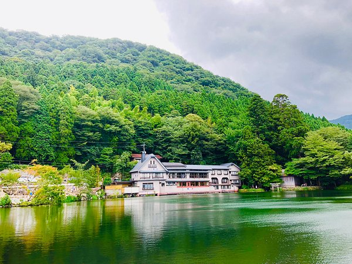
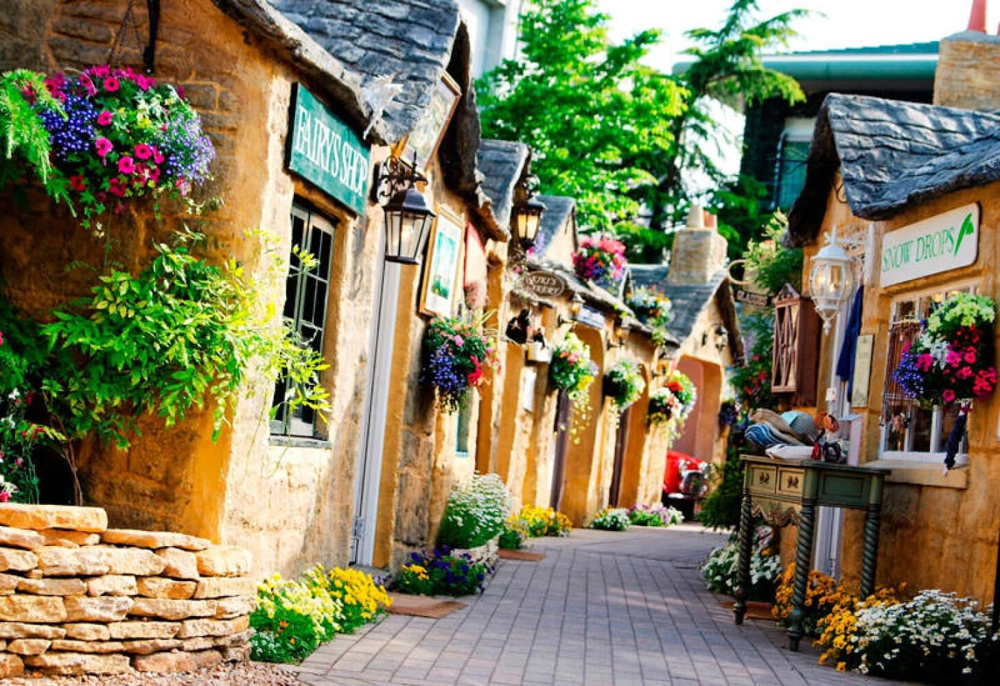
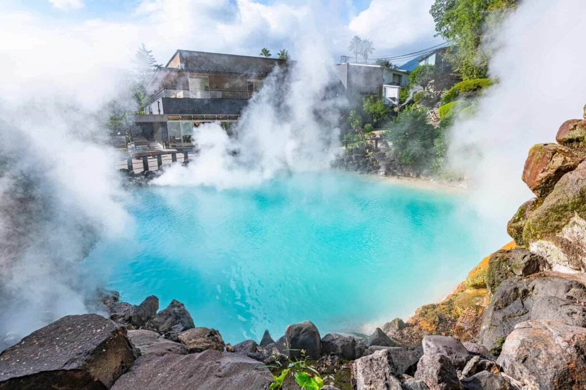

🚗 รับรถ Toyota Rent-a-Car
fukuoka airport
Saturday • 26 September 2026
Boat 12:30 • Shrine • Mount Aso
🌤️ Takachiho Weather
เส้นทางวันนี้ทั้งหมด
fukuoka airport
เดินเล่น ถ่ายรูป รอเช็กอินเรือ
พายเรือ 30 นาที
บันไดหิน + โคมไฟกลางป่า
ทุ่งหญ้าคุสะเซนริ
ทะเลสาบอันงดงามแห่งนี้ขึ้นชื่อเรื่องหมอกในยามเช้า มีศาลเจ้าขนาดเล็กตั้งอยู่ทางตอนใต้
เมืองแห่งผืนป่าในวันฝนพรำ
บ่อนรกทั้งแปดแห่งเบปปุ



ทะเลสาบเล็ก ๆ ใจกลางยูฟุอิน ที่มีหมอกลอยเหนือผิวน้ำในยามเช้า เป็นหนึ่งในจุดชมวิวที่เงียบสงบและสวยที่สุดของเมือง
📍 Google Maps
เมืองออนเซ็นบรรยากาศอบอุ่นที่โอบล้อมด้วยภูเขา เดินเล่นถนนสายหลัก แวะคาเฟ่ ร้านขนม และชมทะเลสาบ Kinrin Lake ที่สวยเป็นพิเศษในช่วงเช้า
📍 Google Maps
ทัวร์บ่อนรกเบปปุ ชมน้ำพุร้อนสีฟ้าครามและบ่อโคลนเดือดสุดอัศจรรย์จากธรรมชาติ ♨️"
📍 Google Maps